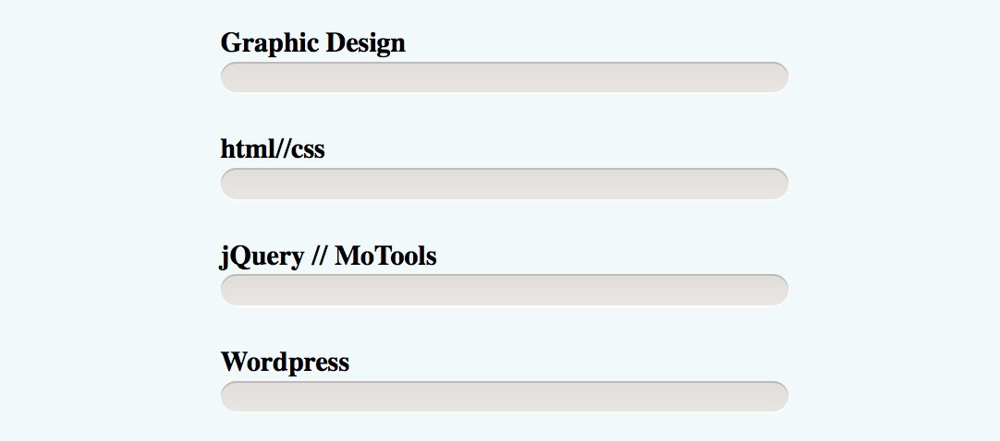

Graphic Design
html//css
jQuery // MoTools
Wordpress
首先分析一下这个进度条的结构：分别是标题、背景槽、颜色条。
html结构：
<ul id="skill">
<li><span class="bar bar-1"></span><h3>Graphic Design</h3></li>
<li><span class="bar bar-2"></span><h3>html//css</h3></li>
<li><span class="bar bar-3"></span><h3>jQuery // MoTools</h3></li>
<li><span class="bar bar-4"></span><h3>Wordpress</h3></li>
</ul>
设置页面的背景色：{background: #E9E5E2;} 它的初始样式是这样的：

接下来为它添加样式：
#skill {
list-style: none;
font-size: 12px;
width: 296px;
margin: 40px auto 20;
padding: 50px 0;
position: relative;
line-height: 2em;
}
#skill li {
margin-bottom: 50px;
background: #e9e5e2;
background-image: -webkit-gradient(linear,left top,left bottom,from(#e1ddd9), to(#e9e5e2));
background-image: -moz-linear-gradient(top,#e1ddd9,#e9e5e2);
background-image: -ms-linear-gradient(top,#e1ddd9,#e9e5e2);
background-image: -o-linear-gradient(top,#e1ddd9,#e9e5e2);
background-image: linear-gradient(top,#e1ddd9,#e9e5e2);
height: 20px;
border-radius: 10px; /*--背景槽的圆角--*/
-webkit-box-shadow: 0 1px 0 #bebbb9 inset, 0 1px 0 #fcfcfc;
box-shadow: 0 1px 0 #bebbb9 inset, 0 1px 0 #fcfcfc;
}
#skill li:nth-last-child(1) {
margin-bottom: 0;
}
#skill li h3 {
position: relative;
top: -25px; ／*--标题文字上移--*／
}
加完这些样式之后，标题和背景槽的样式都设置好了
接下来就可以设置颜色条的样式了：
/*--四条进度条的统一样式--*/
.bar {
height: 18px;
margin: 1px 2px;
position: absolute;
border-radius: 9px;
-webkit-box-shadow:0 1px 0 #fcfcfc inset, 0 1px 0 #bebbb9;
box-shadow:0 1px 0 #fcfcfc inset, 0 1px 0 #bebbb9;
}
/*--单独设置进度条的样式--*/
.bar-1 {
width: 100%;
-webkit-animation: graphic-design 2s ease-in-out infinite;
animation: graphic-design 2s ease-in-out infinite;
background-color: #f674a4;
background-image: -webkit-gradient( linear, left top, left bottom, from(#f674a4), to(#e06995));
background-image: -webkit-linear-gradient(top, #f674a4, #e06995);
background-image: -moz-linear-gradient(top, #f674a4, #e06995);
background-image: -ms-linear-gradient(top, #f674a4, #e06995);
background-image: -o-linear-gradient(top, #f674a4, #e06995);
background-image: linear-gradient(top, #f674a4, #e06995);
}
.bar-2 {
width: 90%;
-webkit-animation: html-css 2s ease-in-out infinite;
animation: html-css 2s ease-in-out infinite;
background-color: #0674a4;
background-image: -webkit-gradient( linear, left top, left bottom, from(#f674a4), to(#e06995));
background-image: -webkit-linear-gradient(top, #0674a4, #006995);
background-image: -moz-linear-gradient(top, #0674a4, #006995);
background-image: -ms-linear-gradient(top, #0674a4, #006995);
background-image: -o-linear-gradient(top, #0674a4, #006995);
background-image: linear-gradient(top, #0674a4, #006995);
}
.bar-3 {
width: 65%;
-webkit-animation: jQuery 2s ease-in-out infinite;
animation: jQuery 2s ease-in-out infinite;
background-color: #06f4a4;
background-image: -webkit-gradient( linear, left top, left bottom, from(#f674a4), to(#e06995));
background-image: -webkit-linear-gradient(top, #06f4a4, #00f995);
background-image: -moz-linear-gradient(top, #06f4a4, #00f995);
background-image: -ms-linear-gradient(top, #06f4a4, #00f995);
background-image: -o-linear-gradient(top, #06f4a4, #00f995);
background-image: linear-gradient(top, #06f4a4, #00f995);
}
.bar-4 {
width: 80%;
-webkit-animation: Wordpress 2s ease-in-out infinite;
animation: Wordpress 2s ease-in-out infinite;
background-color: #06f4ff;
background-image: -webkit-gradient( linear, left top, left bottom, from(#f674a4), to(#e06995));
background-image: -webkit-linear-gradient(top, #06f4ff, #00f9ff);
background-image: -moz-linear-gradient(top, #06f4ff, #00f9ff);
background-image: -ms-linear-gradient(top, #06f4ff, #00f9ff);
background-image: -o-linear-gradient(top, #06f4ff, #00f9ff);
background-image: linear-gradient(top, #06f4ff, #00f9ff);
}
/*--设置每条进度条的关键帧动画--*/
@-webkit-keyframes graphic-design {
0% {width:0;}
100%{width:100%;}
}
@
keyframes graphic-design {
0% {width:0;}
100%{width:100%;}
}
@-webkit-keyframes html-css {
0% {width:0;}
100%{width:90%;}
}
@keyframes html-css {
0% {width:0;}
100%{width:90%;}
}
@-webkit-keyframes jQuery {
0% {width:0;}
100%{width:65%;}
}
@keyframes jQuery {
0% {width:0;}
100%{width:65%;}
}
@-webkit-keyframes Wordpress {
0% {width:0;}
100%{width:80%;}
}
@keyframes Wordpress {
0% {width:0;}
100%{width:80%;}
}
设置进度条的颜色，长度，和动画。就OK了！